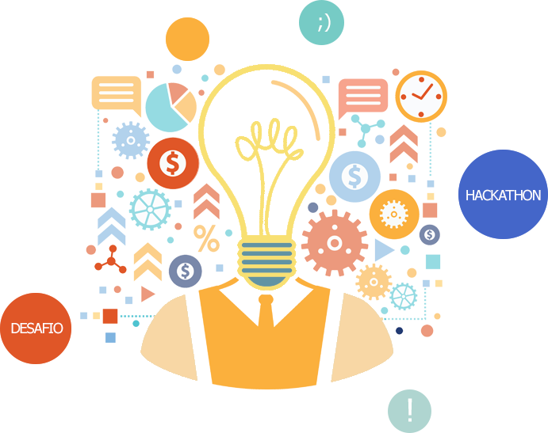

O Hackathon iniciou-se como um evento que reúne programadores, designers e outros profissionais ligados ao desenvolvimento de software para uma maratona de programação, com um fim específico ou projetos livres que sejam inovadores e utilizáveis.
Atualmente, não somente por projetos idealizados especificamente por pessoas da área de programação é constituída uma Hackathon. Conforme a prática foi se popularizando e trazendo resultados excelentes para as empresas, outras áreas foram adotando essa cultura de realizar maratonas.
Se você tem um desafio seja na sua empresa ou na sua cidade, precisará resolvê-lo com urgência, um Hackathon pode ser o que você precisa.
Através de um hackathon, é possível reunir profissionais de áreas distintas para o desenvolvimento de uma ideia ou produto para solucionar e inovar um desafio ou problema interno.

As soluções são criadas por pessoas diferentes, com isso se uma gama maior de propostas.
Você pode mostrar suas habilidades e criatividade para grandes empresas que, no fim das contas, pode acabar te contratando ou utilizando seus serviços de alguma forma.
A inovação não está mais restrita aos departamentos de pesquisa e desenvolvimento das empresas. As organizações estão abrindo os olhos para as soluções geradas pelas comunidade, mercado e academia. Um Hackathon é uma oportunidade para os estudantes vivenciarem esse processo.
Um Hackathon simula a realidadedas empresas, onde profissionais de áreas complementares se unem para a realização de um mesmo projeto. Você tem duas alternativas: ou aceita a equipe e tenta dar o melhor de si para juntos, alcançarem o melhor resultado, ou está fora.
Em quase todos os eventos, os prêmios vão de viagens internacionais, smartphones, ingressos para shows e eventos a vale compras. Só por isso, já valeria a pena o esforço.
O Hackathon geralmente atrai profissionais do setor em estudo e investidores ávidos por ideias brilhantes. Essas ideias podem ser as suas.
Sim, o Hackathon é divertido, por acontece de forma "gamificada", num ambiente de descontração, onde os participantes - acredite - nem sentem a hora passar.